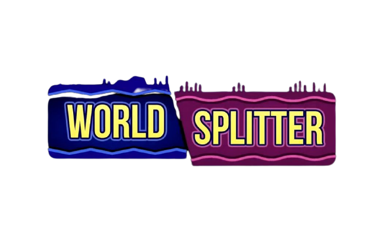

Sorties : Les meilleurs sorties de jeux de l'année !
MLB THE SHOW 21
Incarnez une légende
Pour la première fois, reprenez le joueur que vous incarniez dans Road To The Show et utilisez-le dans d’autres modes de jeu. Votre joueur peut désormais être une légende !
Maskmaker
Will you become… the MASKMAKER ?
vous incarnez un apprenti fabricant de masques et apprenez la magie de la fabrication de masques pour vous immerger dans les êtres intrigants et énigmatiques du jeu. D'un masque à l'autre et d'une énigme à l'autre, explorez votre chemin à travers le "royaume des masques" pour rechercher Prospero qui semble le gouverner et, finalement, percer le secret de son identité.
World Splitter

Pokemon Snap
Devenez photographe Pokémon dans New Pokémon Snap sur Nintendo Switch!
Embarquez pour un safari à travers les déserts brûlants et les jungles luxuriantes de Lentis et photographiez des Pokémon sauvages dans leur habitat naturel avec ce nouvel épisode inspiré du classique sur Nintendo 64.